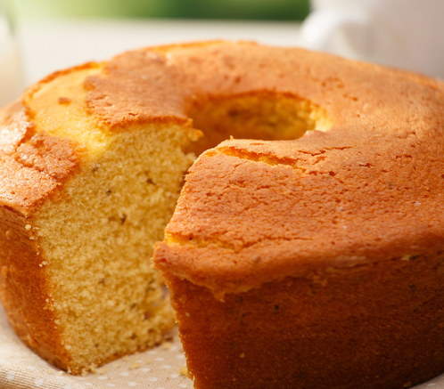

BOLO DE MILHO

INGREDIENTES:
Massa:
- 1 lata de milho verde (não é necessário eliminar a água);
- 1/2 lata de óleo (pode utilizar a medida da lata de milho);
- 1 lata de açúcar (pode utilizar a medida da lata de milho);
- 1/2 lata de fubá (pode utilizar a medida da lata de milho);
- 4 ovos;
- 2 colheres de farinha de trigo;
- 2 colheres de coco ralado;
- 1 colher e 1/2 de chá de fermento em pó.
MODO DE PREPARO:
- Bata todos os ingredientes no liquidificador. Após, acrescente o coco ralado e o fermento;
- Misture e coloque para assar;
- Coloque em uma forma untada e enfarinhada;
- Leve ao forno preaquecido a 180ºC por, aproximadamente, 40 minutos.
| Informações nutricionais |
| Nutriente |
Quantidade por Receita Completa |
| Calorias |
3084 kcal |
| Carboidratos |
349g |
| Proteínas |
41 |
| Gorduras totais |
169g |